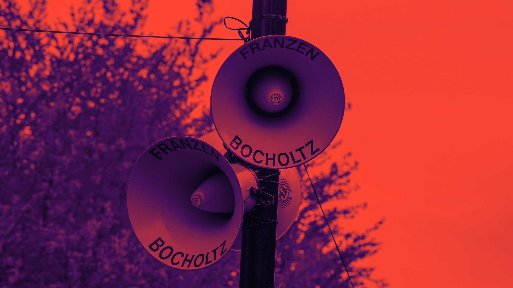

GTF Franzen / Omroep CH 02
Omroep
100V-omroepinstallaties huren, met ruim 300 eigen hoorns. Bekend van het OLS en de Amstel Gold Race.
GTF Franzen uit Bocholtz (Zuid-Limburg) verhuurt 100V-omroepinstallaties voor evenementen. We hebben meer dan 300 eigen hoorns, voornamelijk van Philips, plus 100V-versterkers, microfoons, bekabeling en masten.
We plannen de opzet, bouwen op, verzorgen de bediening als u dat wilt en halen alles weer op. We werken in heel Limburg, de rest van Nederland, België en Duitsland.
Omroep is waar GTF Franzen in Limburg al generaties om bekendstaat. U herkent ons aan de hoorns met FRANZEN BOCHOLTZ erop. Op het Oud Limburgs Schuttersfeest hingen er meer dan 140, langs de Amstel Gold Race hangen ze langs het parcours.
- 100V-omroepinstallaties huren, uit eigen voorraad
- 100V-omroep over grote afstanden
- Hoorns op masten, palen en gebouwen
- Omroep voor jurywagens en mobiele omroep
- Omroep voor optochten en wielerkoersen
- Microfoons voor speaker en presentator
- Advies over de opzet vooraf
Zo werken wij
Waarom 100V?
Met een 100V-systeem sluit u veel hoorns aan over lange afstanden, zonder dat het geluid wegvalt. Ideaal voor grote terreinen, parcoursen en optochten.
Het terrein in kaart
We kijken vooraf waar het publiek staat en waar de hoorns moeten hangen. Zo is de speaker overal te verstaan, zonder dat het op één plek te hard staat.
Ook onderweg
Met omroep op jurywagens en mobiele omroep reist het geluid mee met de optocht of de koers.
Veelgestelde vragen
Wat is een 100V-omroepinstallatie?
Een systeem waarmee u veel luidsprekers of hoorns via lange kabels op één versterker aansluit. Het is betrouwbaar en geschikt voor grote terreinen, routes en gebouwen.
Hoeveel hoorns kunt u plaatsen?
We hebben meer dan 300 eigen hoorns, voornamelijk van Philips. Hoeveel er nodig zijn, hangt af van het terrein. Op het Oud Limburgs Schuttersfeest hingen er meer dan 140. Kleiner kan natuurlijk ook.
Doet u ook omroep voor jurywagens?
Ja. Op schuttersfeesten zoals het OLS reden diverse jurywagens met onze omroep.
Kan ik bij u een 100V-omroepinstallatie huren?
Ja. We verhuren complete 100V-omroepinstallaties uit eigen voorraad: hoorns, 100V-versterkers, microfoons, kabels en masten. Meestal bouwen we zelf op en regelen we de bediening, zodat u zeker weet dat alles werkt.
Wat zit er in een 100V-omroepset?
Een versterker met 100V-uitgang, het aantal hoorns of luidsprekers dat nodig is voor uw terrein of route, bekabeling, masten of bevestiging en een of meer microfoons voor de speaker. We stellen de set samen op basis van uw locatie.
Waar verhuurt u omroepinstallaties?
Vanuit Bocholtz werken we in heel Limburg en de rest van Nederland, en net zo makkelijk in België en Duitsland. Door de ligging op de grens zijn Aken, Luik en de Euregio vlakbij.
Wat kost het huren van een 100V-omroepinstallatie?
Dat hangt af van het aantal hoorns, de afstanden en hoe lang u de installatie nodig heeft. U krijgt altijd een vrijblijvende offerte op maat.
Uw
evenement?
Vertel ons wat u van plan bent. U krijgt antwoord van de mensen die het ook gaan bouwen.
info@franzenbocholtz.nl